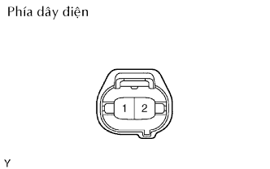

HỆ THỐNG ĐIỀU HOÀ KHÔNG KHÍ > KIỂM TRA TRÊN XE |
| 1. KIỂM TRA CÔNG TẮC ÁP SUẤT ĐIỀU HOÀ |
|  |
Ngắt giắc nối.
Dùng dây sửa chữa, nối các cực 1 và 2 của giắc nối công tắc áp suất trên xe ở phía dây điện.
Khởi động động cơ.
Bật công tắc điều hoà không khí ON và kiểm tra rằng li hợp từ cũng bật ON.
Kiểm tra rằng công tắc từ tắt OFF khi ngắt các cực 1 và 2.
| Điều kiện đo | Điều kiện tiêu chuẩn |
| Nối các cực 1 và 2 | Li hợp từ bật ON |
| Ngắt các cực 1 và 2 | Li hợp từ tắt OFF |
| 2. KIỂM TRA BỘ KHUYẾCH ĐẠI ĐIỀU HOÀ (cho Điều hoà không khí thường) |
Ngắt giắc nối A9 của bộ khuyếch đại A/C.
Đo điện áp và điện trở của giắc nối phía dây điện.
| Ký hiệu (Số cực) | Màu dây | Mô tả cực | Điều kiện | Điều kiện tiêu chuẩn |
| IG+ (A9-10) - GND (A9-18) | R-L - L | Nguồn (IG) | Khoá điện OFF | Dưới 1 V |
| IG+ (A9-10) - GND (A9-18) | R-L - L | Nguồn (IG) | Khoá điện ON | 10 đến 14 V |
| GND (A9-18) - Mát thân xe | L - Mát thân xe | Nối mát | Luôn luôn | Dưới 1 Ω |
| TEMP (A9-6) - B/V (A9-5) | R - V | Tín hiệu núm đặt nhiệt độ | Núm đặt nhiệt độ A/C OFF | 10 kΩ trở lên |
| TEMP (A9-6) - B/V (A9-5) | R - V | Tín hiệu núm đặt nhiệt độ | Núm đặt nhiệt độ ở vị trí COOL | 0 Ω đến 3 kΩ |
| ACON (A9-4) - GND (A9-18) | R-G - L | Tín hiệu công tắc A/C | Khoá điện START Công tắc quạt ON Công tắc A/C OFF | Dưới 1 V |
| ACON (A9-4) - GND (A9-18) | R-G - L | Tín hiệu công tắc A/C | Khoá điện START Công tắc quạt ON Công tắc A/C ON | 10 đến 14 V |
| IND- (A9-13) - GND (A9-18) | R-L - L | Tín hiệu đèn báo A/C | Khoá điện START Công tắc quạt ON Công tắc A/C OFF | Dưới 1 V |
| IND- (A9-13) - GND (A9-18) | R-L - L | Tín hiệu đèn báo A/C | Khoá điện START Công tắc quạt ON Công tắc A/C ON | 10 đến 14 V |
Nối lại giắc nối A9 của bộ khuyếch đại điều hoà.
Đo điện áp và điện trở của giắc nối.
| Ký hiệu (Số cực) | Màu dây | Mô tả cực | Điều kiện | Điều kiện tiêu chuẩn |
| PSW (A9-3) - GND (A9-18) | Y-B - L | Tín hiệu công tắc áp suất | Khoá điện ở START, áp suất ga điều hoà bình thường, công tắc quạt điều hoà ON | Dưới 1 V |
| PSW (A9-3) - GND (A9-18) | Y-B - L | Tín hiệu công tắc áp suất | Khoá điện ở START, áp suất ga điều hoà nhỏ hơn 0.196 MPa (2.0 kgf/cm2, 28 psi) hoặc lớn hơn 3.14 MPa (32.0 kgf/cm2, 455 psi), công tắc quạt gió ON | 10 đến 14 V |
| TE (A9-7) - SG-1 (A9-8) | G - P | Tín hiệu cảm biến nhiệt độ giàn lạnh A/C | Khoá điện ở vị trí ON, nhiệt độ của giàn lạnh là 0°C (32°F), công tắc điều khiển nhiệt độ A/C ở vị trí mát nhất MAX COOL | 2.0 đến 2.4 V |
| TE (A9-7) - SG-1 (A9-8) | G - P | Tín hiệu cảm biến nhiệt độ giàn lạnh A/C | Khoá điện ở vị trí ON, nhiệt độ của giàn lạnh là 15°C (59°F), công tắc điều khiển nhiệt độ A/C ở vị trí mát nhất MAX COOL | 1.4 đến 1.8 V |
| SG1-1 (A9-8) - Mát thân xe | P - Mát thân xe | Nối mát cho cảm biến nhiệt độ giàn lạnh A/C | Luôn luôn | Dưới 1 Ω |
| MGC (A9-1) - GND (A9-18) | B - L | Tín hiệu li hợp từ | Khoá điện ở START, li hợp từ của A/C không đóng. | Dưới 1 V |
| MGC (A9-1) - GND (A9-18) | B - L | Tín hiệu li hợp từ | Khoá điện ở START, li hợp từ của A/C đóng. | 10 đến 14 V |
| ACT (A9-2) - GND (A9-18) | R-L - L | Tín hiệu cho phép li hợp từ ON | Khoá điện START Công tắc A/C ON Công tắc quạt ON | Dưới 1 V |
| ACT (A9-2) - GND (A9-18) | R-L - L | Tín hiệu cho phép li hợp từ ON | Khoá điện START Công tắc A/C OFF Công tắc quạt ON | 10 đến 14 V |
| AC1 (A9-14) - GND (A9-18) | Y - L | Tín hiệu yêu cầu bù không tải | Khoá điện ở START, li hợp từ của A/C không đóng. | 10 đến 14 V |
| AC1 (A9-14) - GND (A9-18) | Y - L | Tín hiệu yêu cầu bù không tải | Khoá điện ở START, li hợp từ của A/C đóng. | Dưới 1 V |
| 3. KIỂM TRA ECM |
Đo điện áp của các giắc nối.
| Ký hiệu (Số cực) | Màu dây | Mô tả cực | Điều kiện | Điều kiện tiêu chuẩn |
| ACT (E10-25) - E01 (E12-7) | R-L - W-B | Tín hiệu cho phép li hợp từ ON | Khoá điện START, Công tắc A/C ON | Dưới 1 V |
| ACT (E10-25) - E01 (E12-7) | R-L - W-B | Tín hiệu cho phép li hợp từ ON | Khoá điện START, Công tắc A/C ON | 10 đến 14 V |
| AC1 (E10-24) - E01 (E12-7) | Y - W-B | Tín hiệu yêu cầu bù không tải | Khoá điện START, Li hợp từ A/C đang ăn khớp | Dưới 1 V |
| AC1 (E10-24) - E01 (E12-7) | Y - W-B | Tín hiệu yêu cầu bù không tải | Khoá điện ở START, li hợp từ của A/C không đóng. | 10 đến 14 V |